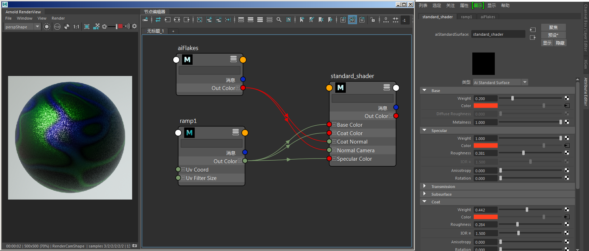

小亮片着色器的用法很多，本教程旨在解析其中一些用法。在本简短教程中，我们将演示如何使用小亮片*着色器（结合使用 *standard_surface 着色器）来创建一些小亮片装饰。
为涂层指定的颜色将仅对较低的基础、金属和镜面反射层染色。涂层层是半透明绝缘类型层，该层将始终反射白色，而不管您为其指定的是什么颜色。涂层层的颜色将对下层基础和镜面反射层染色。例如，与直观感觉有些相反，染了绿色的玻璃没有绿色反射。它是染了绿色的玻璃下方物质的折射。彩色塑料的情况与此相同。
确保小亮片*着色器的 *output_space 设置为“世界”(World)。
使用汽车涂料时，涂层层会很厚，从而达到易于重现的平滑抛光外观。但是，在此装饰示例中，涂层层会很薄，抛光效果较差。涂层层的法线混合了下层皮肤的凹凸、小亮片的方向、具有较厚和较薄面片的装饰本身的分布以及薄层液体的曲面张力实现了远优于任何粗糙曲面的平滑曲面。随着装饰干燥和面部活动，涂层层的曲面也可能会出现裂缝和变暗。
要下载场景文件，请单击此处。

小亮片着色器连接到 standard_surface 的 normal_camera。小亮片着色器 coord_space（对象）和 output_space（世界）。